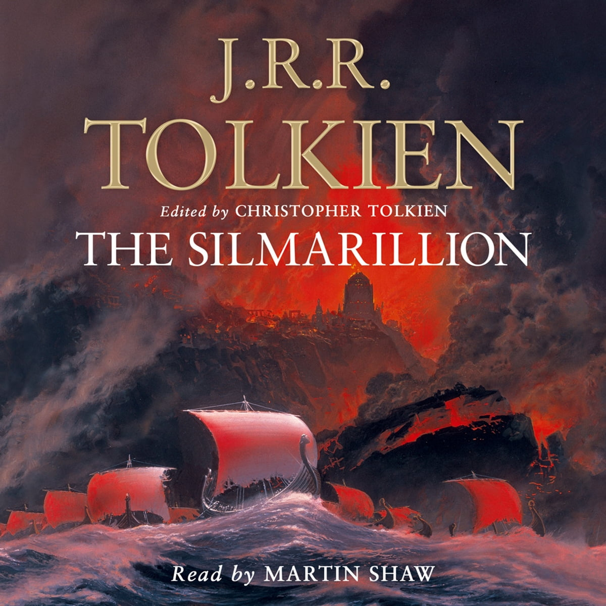
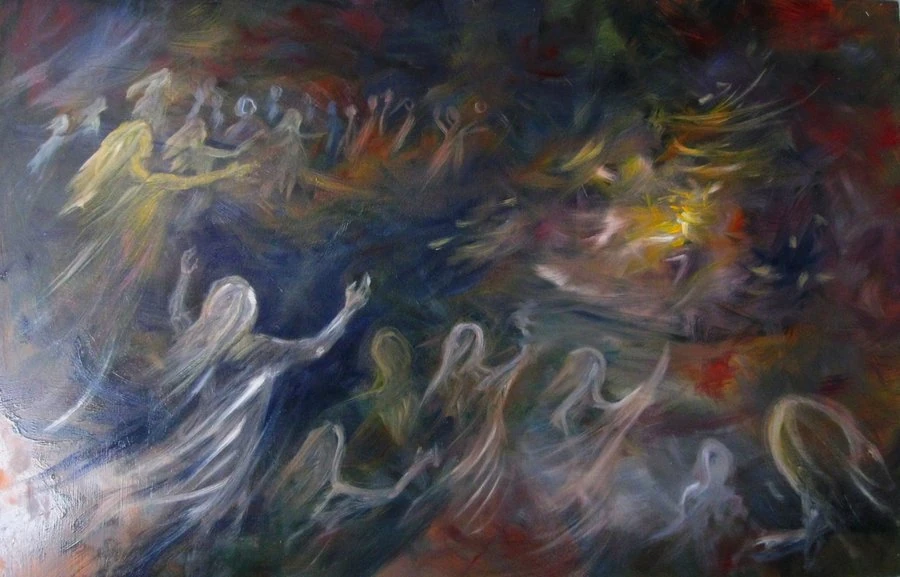
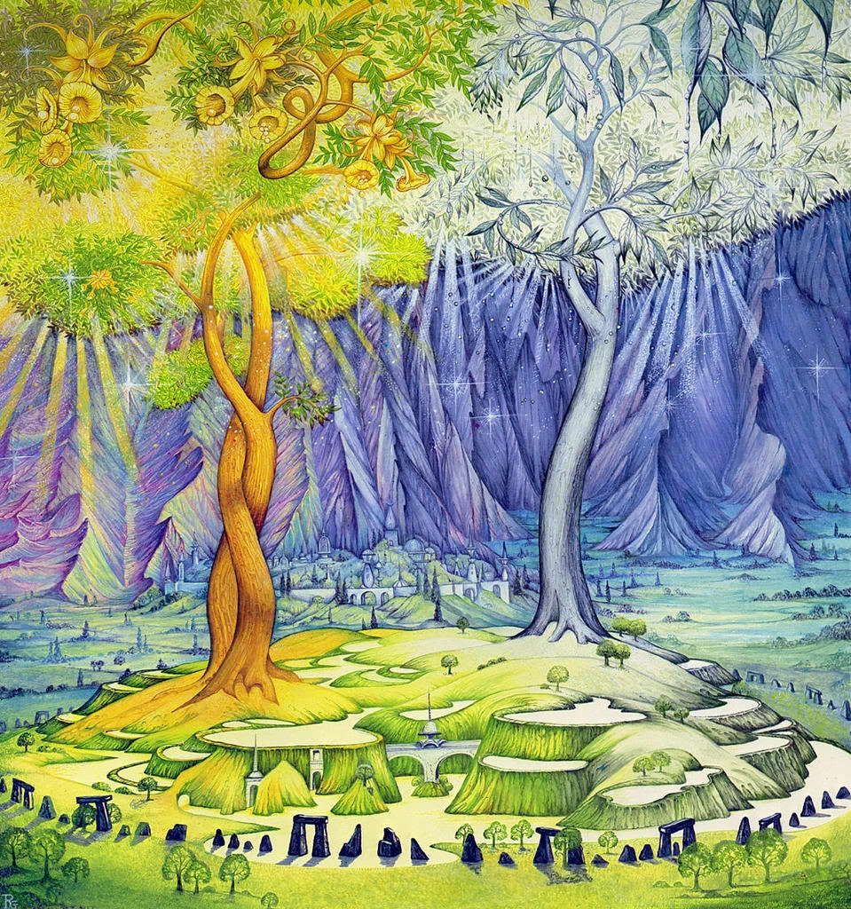
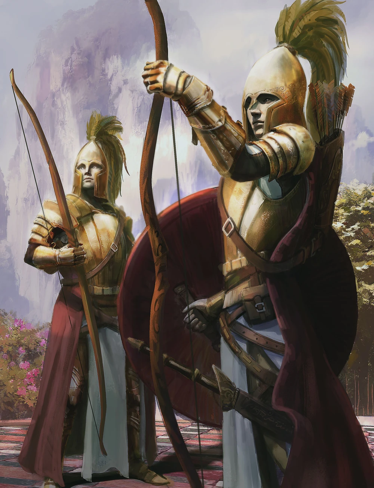

Introduction
The history of J.R.R Tolkien's world from its creation to the stories of the rings.
The stories of the Silmarillion are told through the accounts passed down by the elves.
Which, its main topics are: The creation of the Ainur and the world of Arda, the age of
the trees, the awakening of the elves, the epics of the three Silmarils, the first age,
and finally the second age. Which I will cover up to the awakening of the elves for this
report.
The Creation of the Ainur and Arda
Before the Ainur, there was Ilúvatar, the supreme deity of the universe of Eä. The
equivalent of Ilúvatar in our world would be a god from a monotheistic religion
(God, Allah, Yahweh). He is the one responsible for the creation of the universe,
however, he was not directly involved with the creation of the world of Arda.
Ilúvatar split into multiple versions of himself. Two of which he created with more
power than the rest, Melkor and Manwë. The Valar was then conducted by Ilúvatar to build
the world of Arda using holy chanting or song, known as The Music of Ainur.
During this song, the strongest and the one who most resembled Ilúvatar, Melkor,
became conscious to his own power to lead the other Ainur. Melkor had strayed away
from Ilúvatar's song of creation and began to create his own, more sinister song,
changing the creation of the world. At this time Ilúvatar, had reprimanded Melkor
and reminded him to stay on the all-seeing path of the future and pass that he,
Ilúvatar has created. However, Melkor had other ideas. Through millennia of song by
the Ainur, the world of Arda had been created. A flat disk with mountains, oceans,
land, plants, animals, etc. The main difference between our world and Arda is that
there was no sun and moon. There were two lamps, Illuin and Ormal, putting Arda in
never ending daylight. This is the world that the Ainur, would travel down to and
live amongst waiting in arrival for the elves and men. Ilúvatar's last and most
blessed creations.
The Main Ainur
| Lords |
Queens |
- Manwë
- Ulmo
- Aulë
- Oromë
- Mandos
- Lórien
- Tulkas
- Melkor
|
- Varda
- Nienna
- Estë
- Vairë
- Yavanna
- Vána
- Nessa
|


The Age of the Trees
Upon the arrival of the Ainur to Arda, the Ainur celebrated in their new home an island
named Almaren. During this time, Melkor was cast away from the Ainur and did not dwell
with the rest. Instead, he began building an underground fortress to the far north named,
Utumno. There he gathered many forces, including some Maiar that he had corrupted during
the first song. The Maiar being the servants to the Ainur or the equivalent to the angels.
When Melkor had enough power, he attacked the Ainur in Almaren. He destroyed the two
lamps, in consequence destroying the island as well. As the lamps had an equivalent
power of two suns.
The Ainur now called the Valar (the Ainur that had descended) had fled to the west
to a large continent names Aman and constructed a massive mountain range on the east.
To protect themselves from the forces of Melkor in the land to the west, Middle Earth.
In this time, one of the Valar created the two trees. The first being Telperion, which
gave of a silver light like the moon, the second and final was Laurelin, which emitted a
radiant gold like the sun. These trees would alternate when the shown upon the world.
Creating the first day night cycle in the world of Arda, but its light only shown over
the land of the Valar. This meant that the rest of Arda, from the mountain range of Aman
to the east was cloaked in everlasting darkness for millennia. Once again, the Valar
waited for the awakening of Ilúvatar's children, the elves and men.
The Awakening of the Elves
Under the darkness of Middle-Earth Melkor continued to reign supreme. At this time,
he built another stronghold named Angband. Which Melkor had appointed one of his most
trusted commanders, a corrupted Maiar, and our first familiar name to the franchise
The Lord of the Rings, Sauron.
The Valar continued to pester Melkor in preparation of Ilúvatar's children so that
he could not corrupt them when they had arrived. The final preparation the Valar had
made was the creation of the stars. So that the elves can be guided to the land of
the Valar, Aman. At this time, unbeknownst to the Valar, the elves had awoken.
Even after the preparedness of the Valar, Melkor was still the first to find the
elves. Fortunately, he was not able to corrupt them, except for a few he brought
back to his fortress. These elves would never be seen again and their status unknown
to the elves and Valar for some time.
In one of his adventures to Middle-Earth, the Valar Oromë, had heard a beautiful
singing resonating through a forest. This would be the first time a Valar would
witness Ilúvatar's children, the elves. Oromë, returned home to the other Valar
and informed the others of his findings. At this time, the Valar had finally decided
to act against Melkor for the elves protection and go to war.
The war resulted in large parts of the continent in the north to be reshaped.
The battle was so ferocious that the elves were able to feel Arda shake and witness
the radiant blinding light from the explosion over the horizon thousands of miles
away. The elves witnessing only but the destruction that the Valar have created would
cause some question in the future meeting with the Valar. However, the Valar had
succeeded in their raid over Melkor. Melkor had been captured and his soul would
not be destroyed, but imprisoned in the land of the Valar, Aman.
The last act of the awakening of the elves was the journey to bring them to Aman to
live eternally. However, not all were convinced to follow the Valar, as they did not
know their kindness, and the holy land they preceded over. Some remained, most
followed and thus the journey begun, but not all would arrive in the holy land of Aman.
